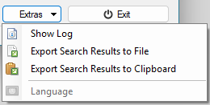

Extras

- Show Log
Shows the log of RED+'s processing.
- Export Search Results to File
Exports the search results to a text file.
Each line represents the full path of an empty directory.
A file selection dialog will be displayed for you to choose where to save the results. - Export Search Results to Clipboard
Exports the search results to the clipboard (as text).
Each line represents the full path of an empty directory.- Language
This is an experimental feature
RED+ can make use of standard PO files to provide translations of text in the user interface.
This is only enabled if you have directory called language in the same directory as the executable. This directory is where you place any *.po files. You will then be able to select the file to be used.
There are currently no PO files distributed with RED+.
The master POT file is available in the languages folder of the source code on GitHub for those wishing to make their own translations. - Language